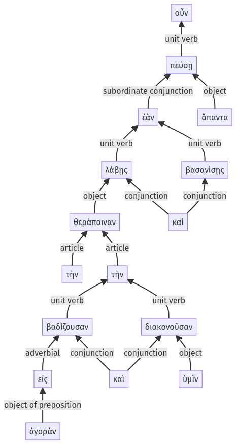

Lysias, 1.16.16-1.16.31a
1.16.1-1.16.15a | 1.16.32-1.16.50a
Sentence 40
1.16.16-1.16.31a
ἐὰν οὖν λάβῃς τὴν θεράπαιναν τὴν εἰς ἀγορὰν βαδίζουσαν καὶ διακονοῦσαν ὑμῖν καὶ βασανίσῃς, ἅπαντα πεύσῃ.
2 ἐὰν λάβῃς τὴν θεράπαιναν
3 τὴν εἰς ἀγορὰν βαδίζουσαν
3 καὶ διακονοῦσαν ὑμῖν
2 καὶ βασανίσῃς
1 ἅπαντα πεύσῃ
ἐὰν οὖν λάβῃς τὴν θεράπαιναν τὴν εἰς ἀγορὰν βαδίζουσαν καὶ διακονοῦσαν ὑμῖν καὶ βασανίσῃς, ἅπαντα πεύσῃ.
Highlighting:
- connecting words
- unit verb
- subject
- object
Color code:
- Independent clause (level 1, transitive verb)
- subordinate clause (level 2, transitive verb)
- attributive participle (level 3, intransitive verb)
- attributive participle (level 3, transitive verb)
- subordinate clause (level 2, transitive verb)
